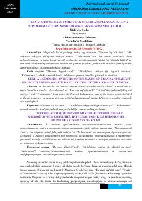

XAQadimgi turkiy lug'atlardagi non va non mahsulotlari nomlarining leksik-semantik tahlili.
Maqolada XI-XIV asrlarga oid qadimgi turkiy lug'atlar — "Devonu lug'otit turk", "At-tuhfatuz zakiyyat fillug'atit turkiya" va "Kelurnoma" asarlarida uchraydigan non va non mahsulotlari nomlarining leksik-semantik tahlili yoritilgan. Shuningdek, ularning pishirilish usullari, o'xshash va farqli jihatlari ilmiy asosda tahlil qilingan.